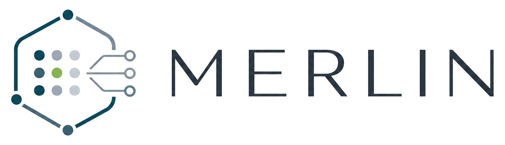
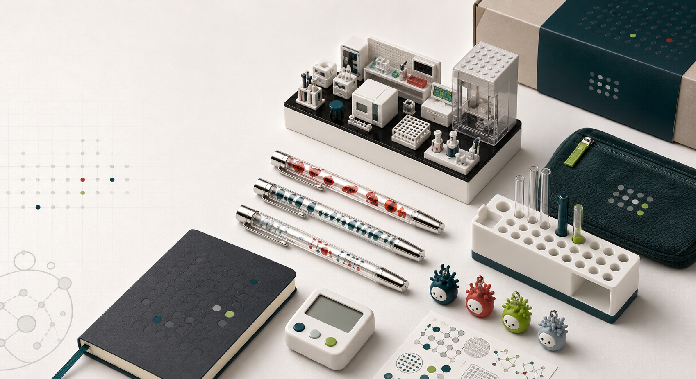
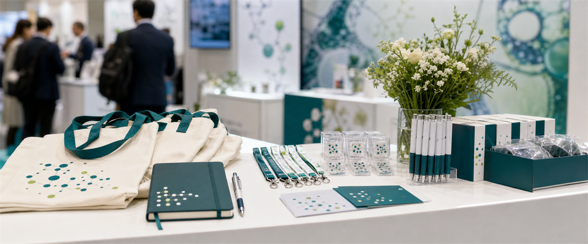
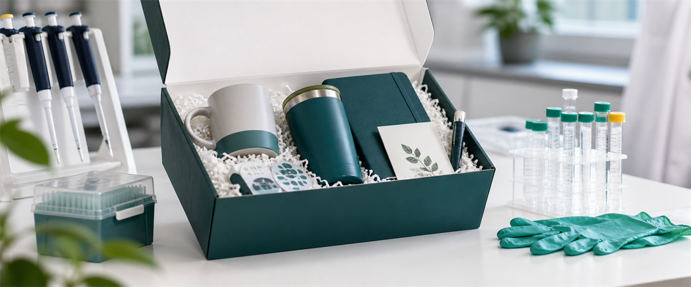
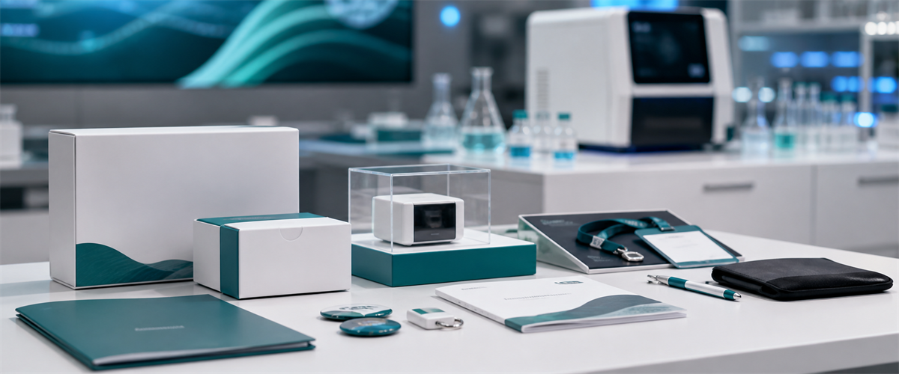
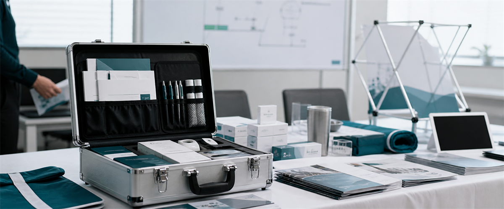
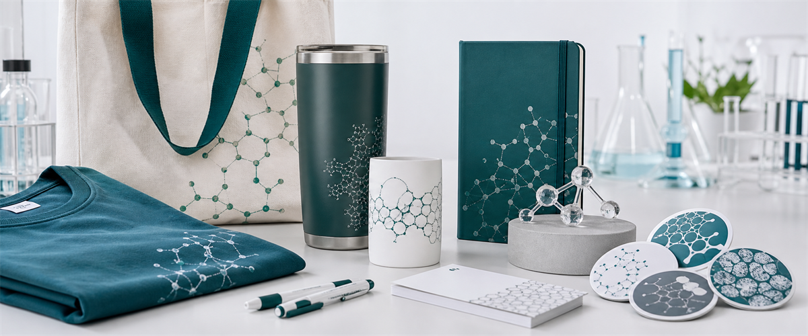
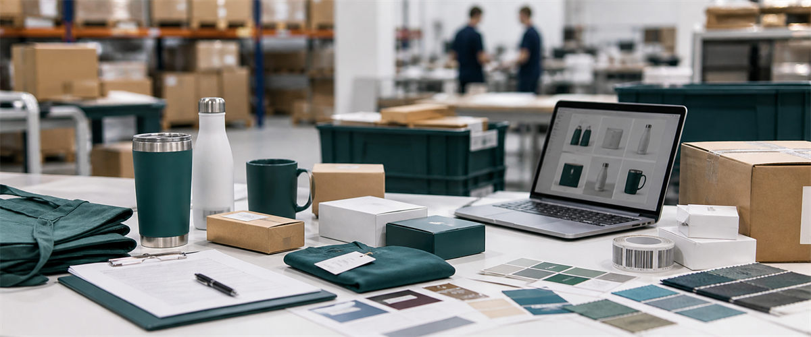

Design Consulting
We help shape the right giveaway strategy for your audience, event, brand, budget, and timeline.

Scientific market gifting
Research-aware custom giveaways, sample development, bulk sourcing, and factory-to-HQ delivery for biotech, diagnostics, medtech, and research tools companies.
Built for scientific audiences, not generic promotional catalogs.

What Merlin does
We help shape the right giveaway strategy for your audience, event, brand, budget, and timeline.
We coordinate custom samples, materials, print methods, packaging options, and production-ready specifications.
We manage production, quality checks, international shipping, customs coordination, and factory-to-HQ delivery.
Who we serve
Use cases

Curated merchandise for scientific conferences, exhibitions, and booth engagement, planned around audience fit and production timing.

Thoughtful branded items designed for lab teams, collaborators, research communities, and technical customer groups.

Custom pieces that support new assay, instrument, software, platform, or application launches with scientific visual systems.

Reusable branded materials for sales teams, demos, roadshows, customer meetings, and regional market activation.

Premium everyday items with life science-aware design, not generic logo placement or low-retention event swag.

Custom production and factory-to-HQ delivery for teams that need manufacturing support across different order sizes.
Process
We learn your audience, event, timeline, quantity, budget, brand system, shipping destination, and internal requirements.
We recommend gift ideas, design directions, product combinations, packaging approaches, and budget ranges.
We coordinate prototypes or pre-production samples so your team can review quality, materials, colors, and branding details.
Once approved, we manage supplier coordination, production timing, packaging, and quality checks.
Finished goods are shipped from the factory to your office, headquarters, warehouse, or designated business address, with international shipping and customs coordination handled.
Product thinking
Merlin starts with the scientific audience and the moment of use: what a researcher, lab manager, technical buyer, or conference attendee will carry, keep, and associate with your brand.
Notebooks, bench-safe labels, marker sets, organizers, badge accessories, and desk tools.
Totes, travel pouches, hydration pieces, comfort items, chargers, and practical attendee kits.
Molecule-inspired graphics, assay-grid patterns, field-specific motifs, packaging inserts, and custom visual themes.
Higher-touch kits for partners, collaborators, advisors, and internal science teams.
Why Merlin
We design for scientific audiences, from lab teams and researchers to technical buyers and life science marketers.
We help decide what to make, not just where to print a logo.
We connect design intent with international manufacturing options across different order sizes.
We coordinate sampling, production, quality checks, shipping, customs, and delivery to your business address.
Audience context
Life science marketing often involves different audience types, company policies, and event requirements. Merlin helps teams choose gifts with audience, use case, value, and approval workflows in mind. For HCP-facing or regulated contexts, final review should follow your internal compliance process.
FAQ
No. Merlin focuses on custom project-based gifting programs, sampling, and bulk production.
Yes. Design consulting and product direction are part of the service.
Our standard delivery model is factory-to-HQ, office, warehouse, or another designated business address. Venue or hotel logistics should be coordinated separately by the client or event operator.
Yes. Sampling and prototype coordination can be handled before bulk production.
Yes. Merlin can support companies entering North American scientific markets with gifting strategy, sourcing, production, and delivery coordination.
Contact
Send a short note with your company, project type, estimated quantity, target date, and shipping destination country. For best results, reach out before finalizing event timelines or production deadlines.